图5-32
你可以用科学计算器计算积分方程。
（参考计算器的用户指南找到特定的键，选择正确的功能函数。）
选择如图5-28所示的积分函数。
例1：计算图中积分函数的值，积分区间从0到3。
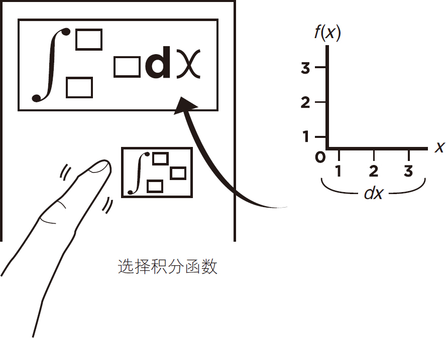
图5-28
然后输入数字3作为常数值，见图5-29。
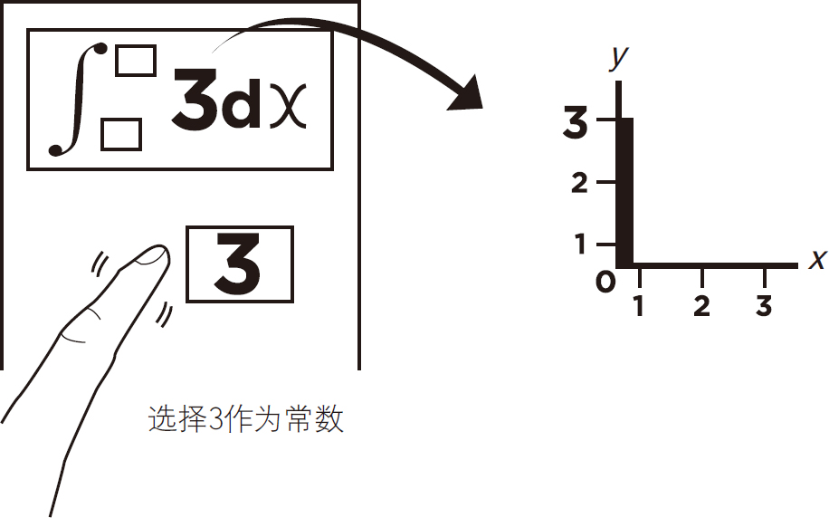
图5-29
选择0作为积分的下限，见图5-30。
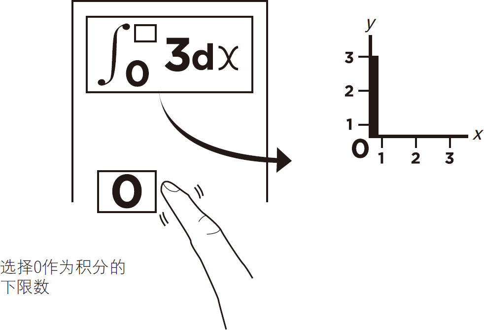
图5-30
然后选择3作为上限值，见图5-31。
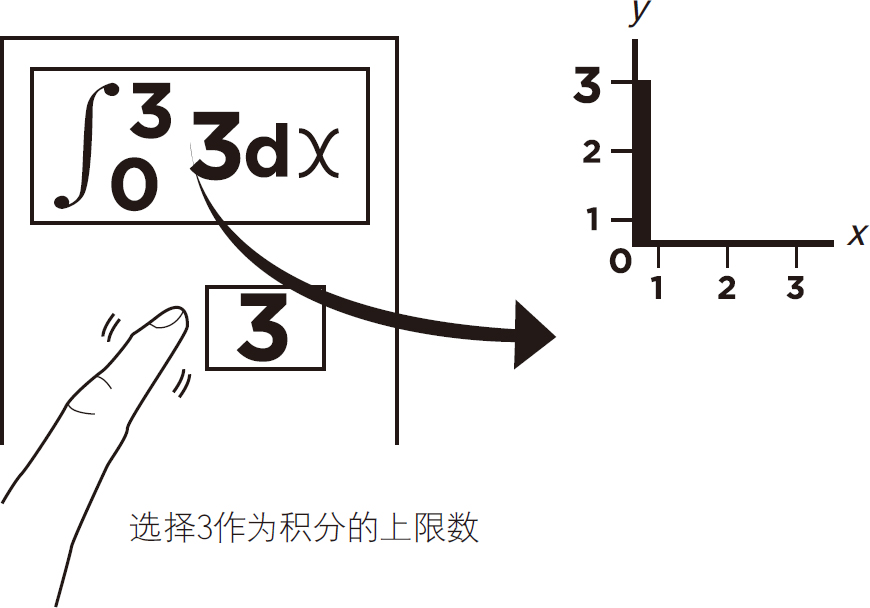
图5-31
现在您可以按等号（＝）键来计算积分了，见图5-32。
图5-32
图5-33显示了积分值的计算结果是9，还显示了积分公式以供检查。
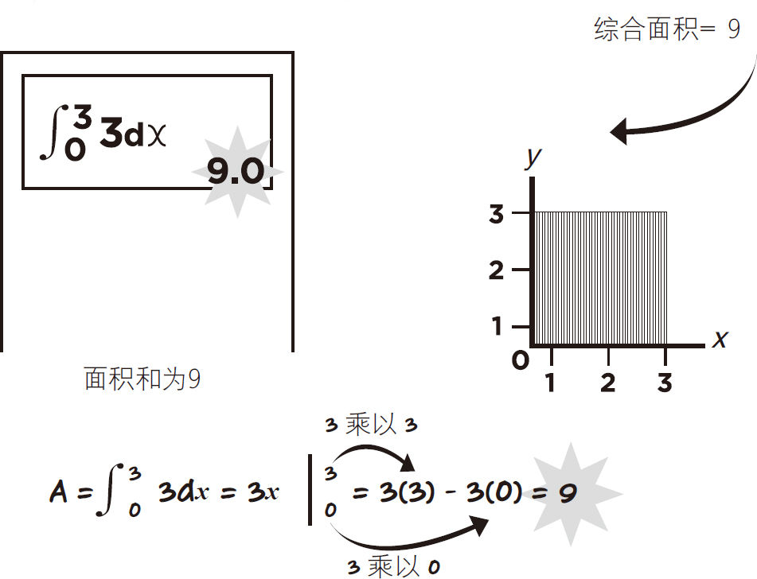
图5-33
这个例子将通过计算幂函数来证明积分的真正能力。你将会看到计算函数f （x ）＝x 2 在x轴上的点0到2的曲线的面积的运算过程。
首先选择积分函数，如图5-34所示。
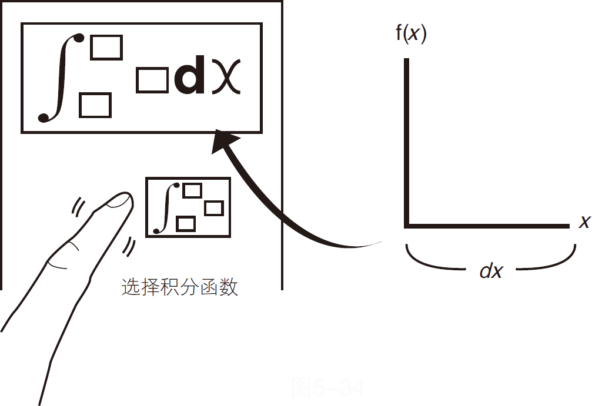
图5-34
选择变量x，如图5-35所示。
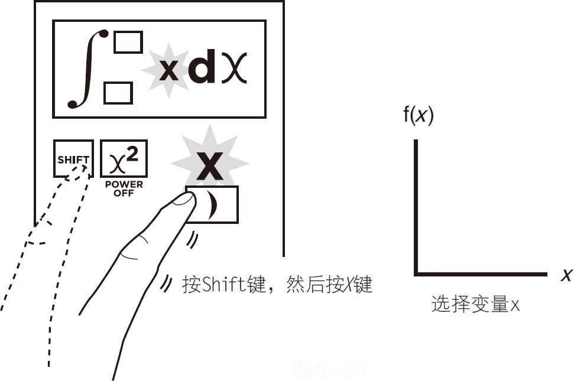
图5-35
例2：在函数f （x ）＝x 2 的曲线下计算区域面积，积分区间从0到2。
接下来选择2幂的按钮，如图5-36所示。
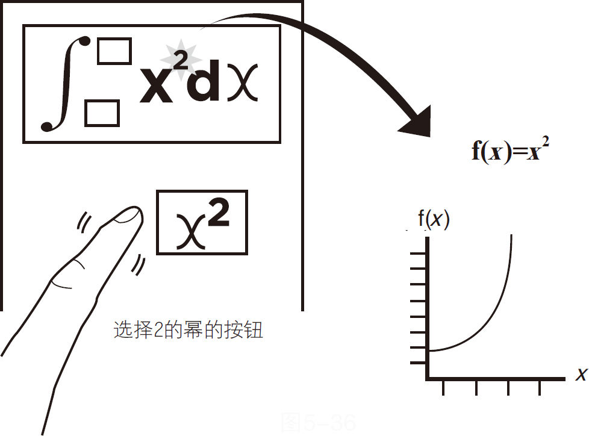
图5-36
将手指移动到上限区域并输入数字2，如图5-37所示。
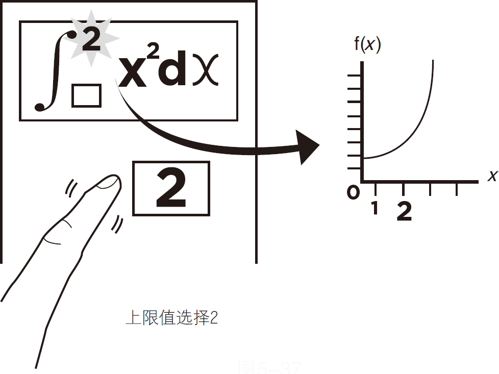
图5-37
向下移动到下限区域并选择数字0，如图5-38所示。
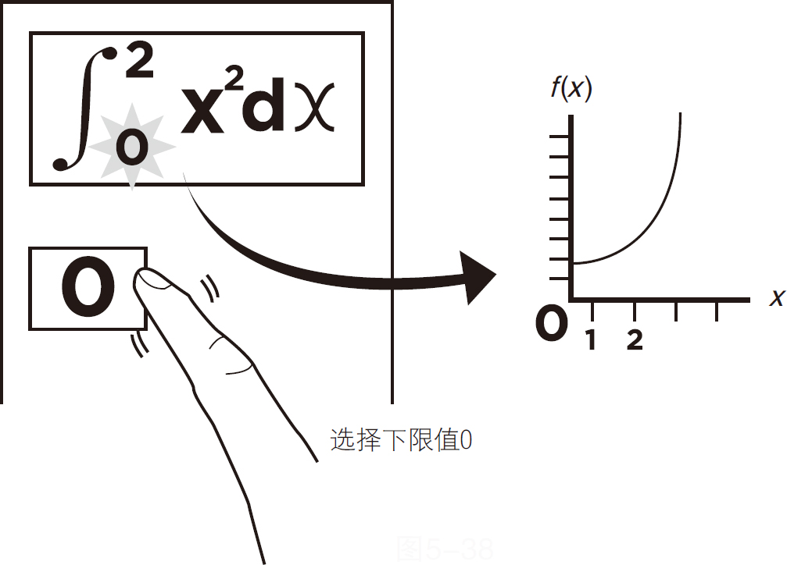
图5-38
按等号键（＝）求和，积分后曲线下的区域面积为
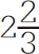
。下边还显示了积分公式以供检查，见图5-39。
图5-39
总和是
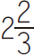
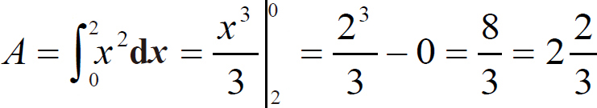
函数曲线下的面积f（X ）＝x 2 ，积分区间从0到2。
注意：积分与微分相反（一些积分函数被称为反导函数。）
通过积分，你可以将无穷小的变化量求和来计算总的变化。
用微分法，你可以除以无穷小的变化量来近似计算变化率。